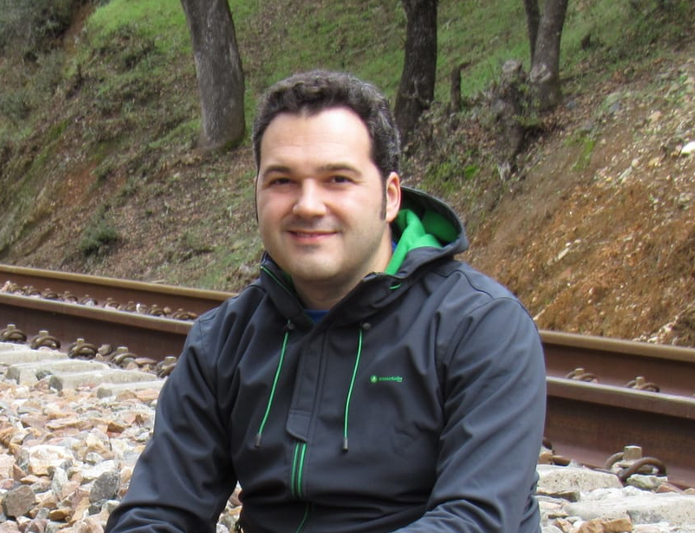

Julián Barranca
Ingeniero de Telecomunicación
Jefe de Proyectos
IPH Ingeniería y Proyectos
Ingeniero de Telecomunicación
Jefe de Proyectos
IPH Ingeniería y Proyectos
Procedente de empresa de I+D, actualmente centro la mayor parte de mi actividad laboral en la gestión de proyectos de Ingeniería.
Dentro de este marco, suelo involucrarme en el desarrollo de soluciones innovadoras asociadas a estos proyectos, participando en su diseño y aportando mis conocimientos técnicos y habilidades en todas las etapas de su gestación. En particular cabe destacar el diseño y prototipado de hardware a medida, la integración de sistemas, y la supervisión (y participación ocasional) en desarrollos software.
En los últimos años, me he ido especializando como project manager, y en consecuencia han crecido mis atribuciones y los ámbitos profesionales que abarca mi gestión. Soy responsable de un elevado número de proyectos, en los cuales aseguro el cumplimiento de sus costes, tiempos y alcances, y garantizo los objetivos de calidad y excelencia que marca mi compañía, transmitiendo su visión y valores hacia nuestros clientes y colaboradores actuales y futuros.
En mi tiempo libre, soy un apasionado de linux, el mundo maker, los sistemas embebidos y el IoT. También hago mis pinitos como administrador de redes y equipos, y me gusta aplicar en mis proyectos personales (como pequeñas instalaciones de cableado estructurado, WiFi, televisión vía tdt/satélite, antenas y radioenlaces, domótica y seguridad, etc.) el know-how adquirido tanto en mi formación académica como en mi experiencia laboral, al mismo tiempo que amplío mis capacidades explorando nuevas disciplinas y estando al tanto de los avances tecnológicos. En un sentido más lúdico, el cine, la música y la lectura son mis grandes aficiones.
| Ingeniero de Telecomunicación. |
| Introducción a Linux como entorno de desarrollo de sistemas software. |
| Creando Apps. Aprende a programar aplicaciones móviles. |
| Agilidad y Lean. Gestionando los proyectos y negocios del s. XXI. |